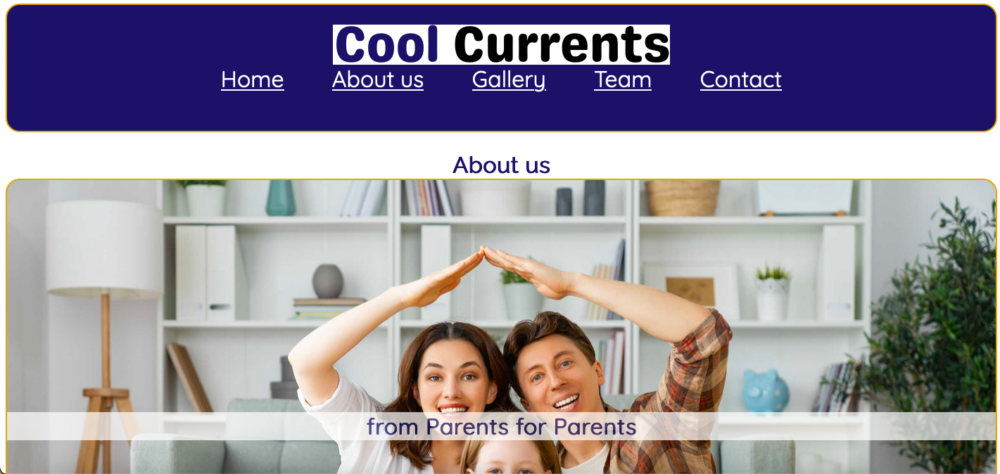

About me
Welcome to my Website, my name is Tim Pfeifer, I am a 28 years old Webdeveloper from Germany.
I am a later starter in regards of Webdevlopment, I started my career just in July 2023, and with lots of passion and dedication I worked hard to become a developer.
I still work full time as a Paramedic in the United Kingdom, a Job that teach me responsibilty, trustworthiness and the ability to work under pressure.
I am a very open minded person, who loves to learn new things and to work in a team. I am very passionate about my work and I am always looking for new challenges.
While i do not plan to leave the securety of my current job, I am looking for a part time job as a Webdeveloper, to gain more experience and to improve my skills.
I am flexible to arrangments and would appriciate if you look at my projects and contact me if you like what you see.

Cool Currents Landing Page
Picture of the Cool Currents Landing Pageclick to closeThis Project combined HTML and CSS to create a Landing Page for a Shop. The main focus was listed on representation not on function.
Link to ProjectTiki Taka Coast Guard
Picture of the TikiTaka Coatguard Landing Pageclick to closeThis Project was aimed to create a landingpage for a fuctional Club, it has some interactive elements, but is focused on represntation and responsive design.
Link to ProjectKeyboard
In this Project the target was to use HTML to make a responsive and interactive website, that allows player to play the piano and get visual feedback, as well as to adjust the song text and notes.
Link to Project